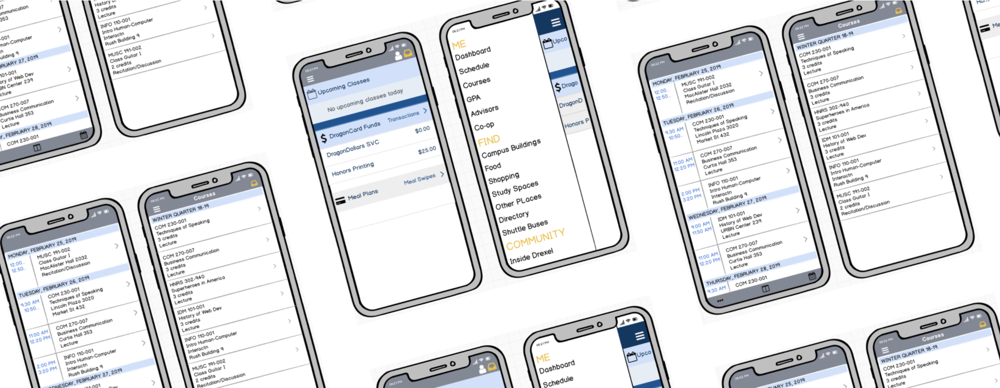
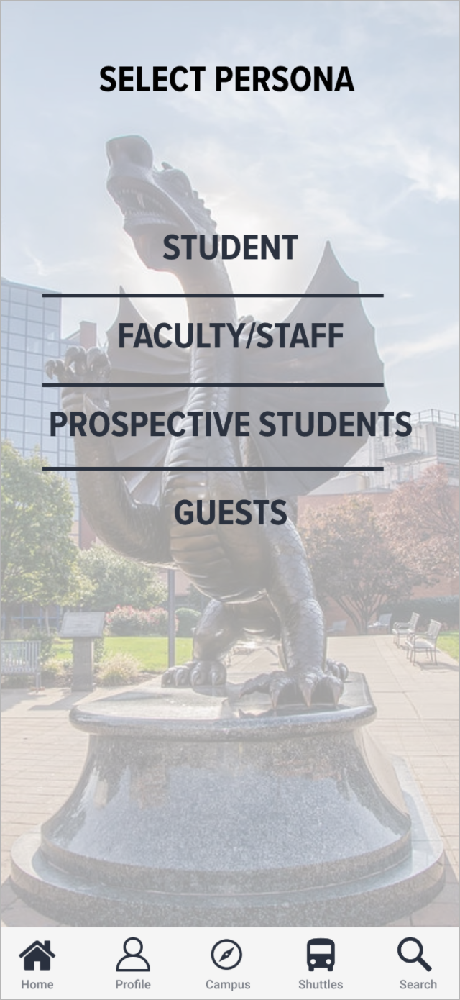
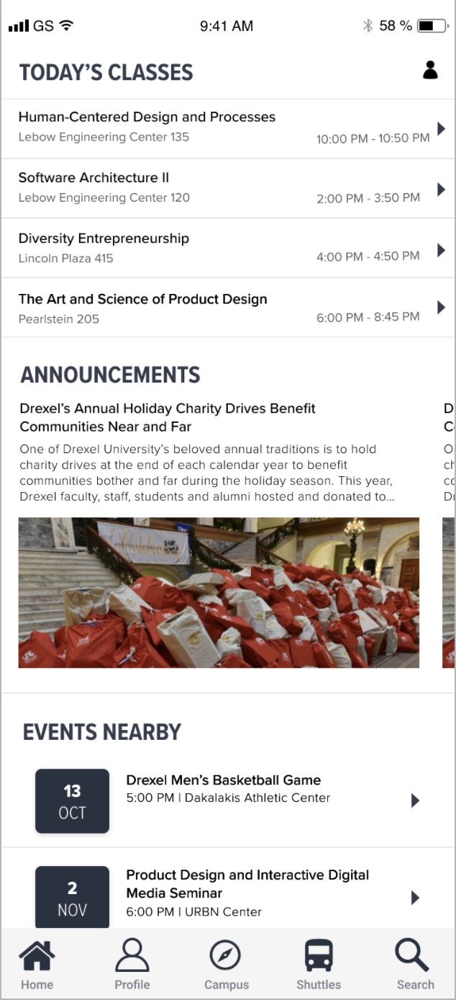
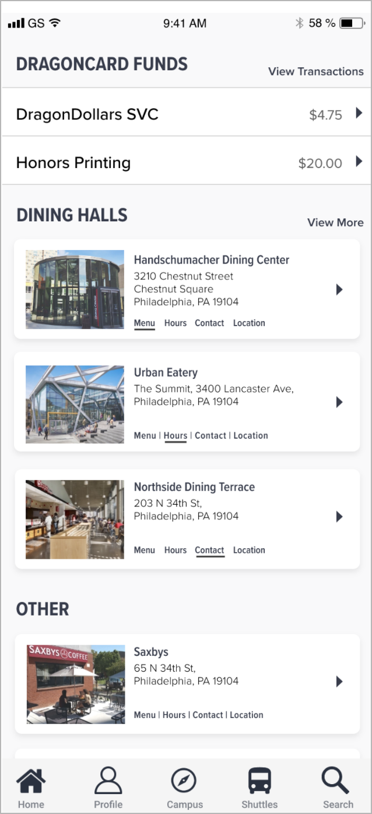

Project Overview
Problem Statement: Drexel University is a private university located in the brotherly love city of Philadelphia. DrexelOne Mobile is a free application provided by the university that grants users access to their personal, academic, financial, and career information from their devices. It is currently available for Android, iOS, and Windows Phone. The app is an on-the-go mobile method of relying information to the students, faculty, and staff at Drexel University as well as providing information on University dining, campus locations, shuttle bus schedules, athletics, and general campus news, activities, and events.At the moment, Drexel University is looking for a way to address issues regarding the low quantity of student body engagement on campus therefore have turned to improving the experience of their mobile application in order to increase student engagement and promote a better experience for incoming students.
My Role: User Experience Designer As the designer, my task included User Research, Wireframing, User Interface and Visual Design, and Interactive Prototyping.
Tools Used: Adobe XD and Adobe Photoshop

User Research
Step One: Existing Mobile App Analysis
I began the redesign by analyzing the existing mobile layout. The mobile interface was outdated, difficult to navigate and cluttered with unessential screens.The redesign began with an analysis of the existing mobile layout. The result of this analysis concluded that the current app interface is outdated, lack affordances, difficult to navigate and cluttered with unnecessary screens that are little to never used.
Step One: Understanding the User
For this part of the research, I decided to survey a range of students at the University ranging from undergraduate to graduate level in order to gauge what the students though was most important and useful features personally to them on the Drexel Mobile app. I interviewed and surveyed 25 Drexel students to get a better understanding of whom I was designing for. Some sample questions include:
Step Three: User Research Analysis
Samples of Final Product
  
Conclusion:
In the future (over next few months), I hope to work closely with Drexel University's College of Computing and Informatics in order to put this into place so that we can increase student engagement on campus, especially since we are a cooperative education school meaning half of our students are away on internships for one half of the year while the other half are on campus and in classes. It's important even if the students are away at work for them to still feel engaged throughout campus and getting them more involved too. Overall, the purpose is to enhance the user experience on mobile interfaces but this specific wireframe modification is to illustrate how the DrexelOne app could be improved by implementing new alterations to the design and functionalities in order to better the lives of Drexel University students both inside and outside of the classrooms.There is much to improve with this interface, however, I think for now it is important to upgrade what is currently on there and improve it from there before adding new additions to it since users need time to adapt and become acquainted with the given features. The user experience will be enhanced once users can easily use this app and use it at its full potential as in integrating it into the student's everyday lives, especially incoming and prospective students in which this new modification of the app can help them to adjust and transition into the college lifestyle and boost student engagement between them and new peers.